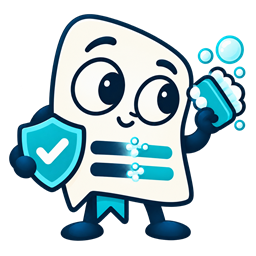

Review your AI handoff
Review or remove sensitive details before copying. Opening an assistant does not send this transcript—you decide whether to paste or attach it there.
Confirm the destination workspace
AI assistants can keep personal and enterprise workspaces in the same browser session. Before pasting, confirm the opened page shows the organization approved for this meeting.

Privacy Scrubber
Loading your privacy preference…